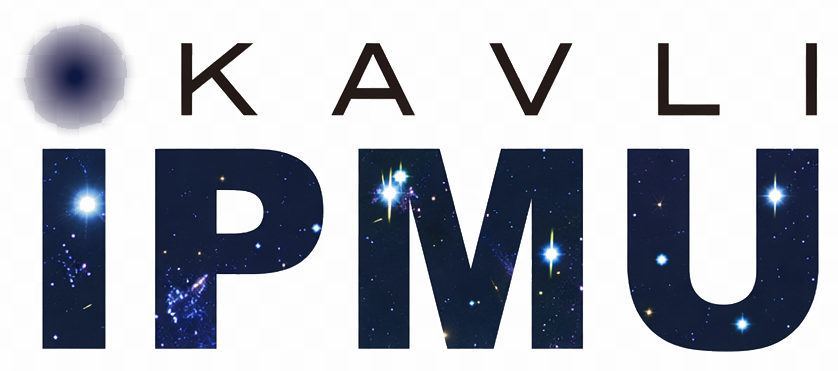

Physicist & AI Researcher
Dark matter · Neutrino physics · Machine learning
B.Sc. Physics, University of Malaya · Incoming M.Phil. AI, HKUST (GZ) 2026
“Setbacks are not stumbling blocks but stepping stones.”
Roughly 95% of the universe is dark matter and dark energy — the very scaffolding of everything that exists — and we still have no idea what these fundamental LEGO bricks actually look like. That mystery is what pulled me into physics, and it still does.
My parallel obsession is intelligence itself. Not AI that is merely powerful, but systems that are genuinely curious — that seek out what they don't know, connect to the underlying laws of nature, and push past the edges of what humans have mapped. I think of this as participating in the emergence of something new: a silicon-based form of life, self-evolving and driven by the same fundamental curiosity that animates science itself.
And if such systems exist, their reach should not stop at the lab. My longer hope is for AI to make education radically fair — to give every student, regardless of family income or geography, a real chance to feel the same wonder at the natural world that set me on this path.

NeurIPS 2026
UTRIP 2025, University of Tokyo
GAT-based particle position reconstruction for dark matter direct detection (undergraduate thesis). Developing an ML-driven detector health monitoring system for 24/7 anomaly diagnosis.
Developed and characterized novel water-based liquid scintillator for next-generation neutrino detectors; evaluated comparative PMT charge response against pure water. Lab is a core group of the Super-Kamiokande experiment (Nobel Prize in Physics 2015, neutrino oscillation).
ML-based particle energy and position reconstruction for the Water Cherenkov Test Experiment; explored model inversion and interpretability techniques.
ML-based particle position reconstruction and detector signal classification for neutrino detection experiments.
Built end-to-end training pipelines for on-device LLMs: dataset construction, SFT with prompt engineering, LoRA and full-parameter fine-tuning across dense and MoE architectures, and GRPO post-training alignment. Participated in an internal hackathon to incubate an agent product based on the OpenClaw architecture.